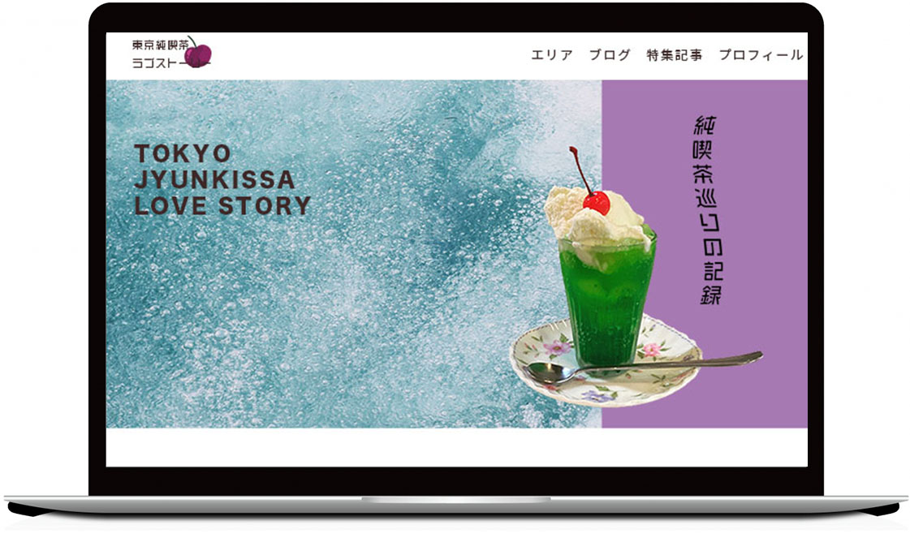
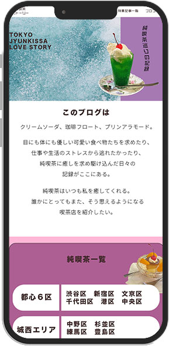
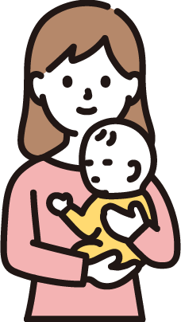

detaile
モナぽての運営する純喫茶ブログ
 喫茶店ブログ
純喫茶巡り
サイトの目的
・SNSへの送客
・発信力強化
ターゲット
高校生〜20代の男女、喫茶店好きの中年
コンセプト
可愛らしくPOPなイメージ
カラー
紫・ピンク・水色
ペルソナ
渡辺陽子さん
・2１歳大学生
・レトロな物が好き
・インスタで喫茶店を調べることがある
制作期間
2022年6月。２週間
担当領域
デザインからコーディングまで全て
制作ツール
illusutorator,Photoshop,Dreamweaver
感想など
- 初めて制作したWEBサイトで、デザインもコーディングも楽しかったです。
- ファーストビューで喫茶店のサイトとわかるように、
トップはクリームソーダと炭酸をイメージした背景にしました。 - HOMEはレスポンシブ対応を作ってみました。
- 全体的にポップになるようにカラフルな色と写真を多く使用しました。
- エリアやブログのページの写真はチェキをイメージして作りました。
- 他のSNSに送客できるようABOUTページでは大きくリンクを貼って載せました。
課題・反省点
- 全体的にぎゅっとしてしまったのでうまく余白を取りたいです。
- カラフルだけどまとまりのあるページを作るのは難しかったです。
- 検索バーを設置したらもっとわかりやすいと思うので設置します。